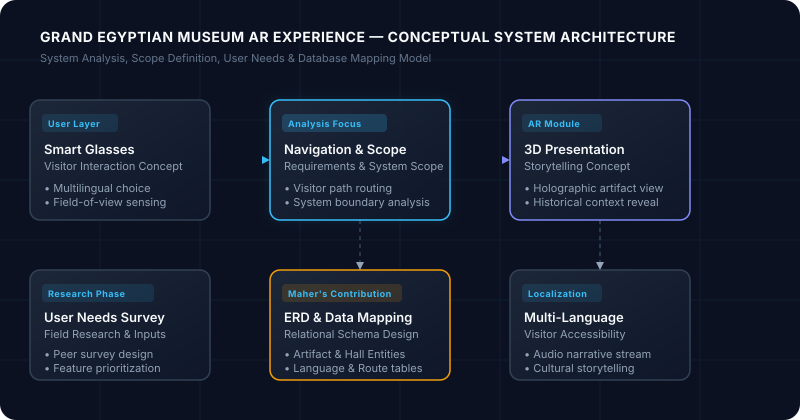

var pipeline = newDataPipeline("GEM_Visitor_Insights");
var insights = await pipeline.ProcessPatternsAsync();
return Results.Ok(new { Status = "Optimized", Patterns = insights.Count });
Query Engine & Modeling
SQL Server • EF Core Active
Data Analysis
Data cleaning, statistical exploration, and discovering patterns.
Full-Stack .NET
ASP.NET Core Web APIs, MVC structure, and EF Core backends.
System Analysis
Translating user needs into ERDs, schemas, and system scope.
Background & Philosophy
About Me
A realistic look at my background, technical passions, and approach to learning and problem solving.
I am a third-year Computer Science and Information student in the Artificial Intelligence Department
at Benha University. I am passionate about exploring how data and software come together to solve practical challenges.
As an entry-level learner, I dedicate my time to building hands-on fundamentals and practicing every day.
Data Analysis is my primary area of focus. I genuinely enjoy the process
of cleaning raw data, organizing messy datasets, discovering patterns, uncovering insights, and applying statistics
to make numbers tell a meaningful story. Transforming unstructured data into clear, understandable information is
something I find deeply rewarding.
In parallel, Full-Stack .NET Development represents my secondary technical direction.
Studying ASP.NET Core, MVC, Web APIs, and database architecture gives me a grounded understanding of how complete software
systems are structured, deployed, and connected end-to-end. Looking ahead, my long-term goal is to grow steadily toward
Data Science.
My Perspective on Technology
I believe Artificial Intelligence is an essential part of the future because technology can save people time and effort.
When faced with any challenge, I prefer to understand the actual problem people are dealing with first,
and only then think about an appropriate technological solution. Enjoying the journey of learning and discovering knowledge
creates the greatest opportunities for continuous personal growth.
Honest Learning Mindset
I don't describe myself as the best programmer or the top student. Instead, I focus on giving my genuine best effort,
admitting what I do not know yet, asking questions, and improving step by step. I strive to reliably fulfill requirements
while always aiming to exceed expectations through careful work.
Personal Strengths
PatienceProblem SolvingCreativityProfessional IntegrityHard WorkCommunicationTeamworkAdaptabilityWillingness to Learn
How I Approach Difficult Problems:
When tackling complex programming concepts, I connect them to real-life analogies. I break large challenges
into smaller parts, identify what is available versus what is missing, and iterate until the solution works.
I also enjoy explaining technical concepts to classmates when something isn't clear to them.
Career Roadmap
Professional Direction
A cohesive three-stage pathway connecting my current core focus, complementary software skills, and long-term ambition.
01
Primary Focus
Data Analysis
My central technical focus. I concentrate on understanding raw business or academic data, cleaning outliers,
performing exploratory data analysis, and building visual dashboards that reveal useful patterns.
Data cleaning, filtering & validation
Statistical analysis & pattern recognition
Exploratory analysis with Python & SQL
Reporting with Power BI & Excel
02
Secondary Direction
Full-Stack .NET
A solid software engineering foundation. Learning how complete applications function from relational database design
and backend APIs to front-end integration allows me to understand where real-world data originates.
ASP.NET Core MVC & Web API architecture
Entity Framework Core & SQL Server
Authentication, authorization & LINQ
System design & dependency injection
03
Long-Term Goal
Data Science
The long-term aspiration bridging my AI university coursework with practical data workflows. Focusing on advanced
mathematical foundations, predictive modeling, and intelligent algorithmic solutions.
Advanced statistical modeling & inference
Machine learning algorithms & evaluation
Predictive pattern recognition
Connecting AI research to practical systems
Technical Foundation
Technical Skills
Technologies and concepts I have studied in university or am actively learning through hands-on coursework and training.
GitGitHubVisual StudioVS CodeSQL Server Management StudioPostmanSwaggerCisco Packet TracerCanva
Academic Journey
Education
Formal university degree studies shaping my understanding of computer science, mathematics, and artificial intelligence.
Benha University
Bachelor of Computer Science and Information
Artificial Intelligence Department
Third Year
Expected Graduation: 2028
Pursuing an undergraduate degree focused on computational theory, artificial intelligence methodologies,
and core software development. The curriculum provides an academic foundation in algorithm complexity,
system architecture, and mathematical statistics.
Intensive hands-on programs providing practical software engineering methodologies and industry tools.
Digital Egypt Pioneers Initiative (DEPI)
Full-Stack .NET Development Track
In Progress
Duration6 Months
Focus AreaEnterprise .NET Architecture
Currently studying in a six-month full-stack development program focused on modern Microsoft technologies.
Gained practical experience implementing enterprise application architectures with ASP.NET Core,
building RESTful Web APIs, managing database migrations with Entity Framework Core, and configuring
secure authentication and dependency injection workflows.
Core Competencies Developed:
ASP.NET CoreMVC ArchitectureWeb APIsEntity Framework CoreSQL ServerDependency InjectionClean Architecture Basics
Featured Work
Projects
Academic system analysis and architectural design concepts, showcasing planning, database design, and user requirement analysis.
Academic ProjectSystem Analysis & Planning
Benha University AI Department
Grand Egyptian Museum AR Experience
An academic concept for an AI-powered museum experience designed around smart glasses for visitors of the Grand Egyptian Museum,
focusing on requirements gathering, user surveying, and database modeling.

The Problem
Navigating massive exhibition halls in world-class museums like the Grand Egyptian Museum can be overwhelming for tourists.
Static placards offer limited context, lack interactive engagement, and often fail to support diverse languages dynamically
or guide visitors efficiently between historically related artifacts.
The Solution Concept
A conceptual system built around smart glasses. When visitors look at an ancient artifact, the concept envisions presenting
it in 3D, providing rich historical storytelling in their preferred language, and offering an intelligent navigation system
to lead them smoothly to subsequent highlights throughout the museum.
Maher's Contribution & Role
As an academic project focused on analysis and planning, my work centered on translating user needs into system requirements
and structured data models rather than implementing physical hardware or AI engines:
System Analysis & Scope Definition
Project Planning & Milestones
Requirements Analysis (In/Out of Scope)
Understanding Tourist Needs
Participating in Survey Design
Distributing Survey to Classmates
Entity Relationship Diagram (ERD)
Relational Database Mapping
System Architecture Design
Presentation Design Using Canva
More projects are currently in development
Currently working on hands-on data analysis notebooks and .NET Web API practical repositories.
As new projects and case studies are finalized, they will be documented and shared here.
<!-- Future projects can easily be inserted into this section -->
Practical Background
Work Experience
Valuable real-world experience building discipline, customer communication, and collaboration under pressure.
Sales Associate
Supermarket • Retail Operations
Transferable Skills
Non-technical retail experience interacting directly with customers and suppliers in a fast-paced environment.
This role provided practical exposure to human-centered communication, problem resolution, and maintaining patience
during high-volume hours.
Transferable Professional Strengths:
✓
Customer Communication
✓
Customer Service Excellence
✓
Working Under Pressure
✓
Patience & Active Listening
✓
Fast Request Resolution
✓
Coordinating with Sales Reps
✓
Interpersonal & Social Skills
✓
Teamwork & Dependability
Continuous Development
Learning & Growth
A transparent overview of what I am actively studying today, my problem solving practice, and long-term milestones.
Current Focus & Daily PracticeActive
Reinforcing core software engineering fundamentals, database query optimization, and structured exploratory data analysis.
Data AnalysisFull-Stack .NETProblem SolvingDatabase DesignSystem Analysis
Future DirectionNext Horizon
Deepening mathematical statistics and transitioning into machine learning model construction, evaluation, and end-to-end pipelines.
Data ScienceMachine Learning FoundationsPredictive Modeling
Problem Solving Practice
Beginner Practice
I actively use Codeforces as a dedicated practice platform to sharpen algorithmic thinking,
break down problem statements, and practice data structure implementations in C++ and Python.
Focusing on learning consistency, mastering foundational logic, and gradual improvement rather than competitive rankings.
Feel free to reach out for student internship opportunities, academic discussions, or technical collaboration.
Let's Connect & Collaborate
I am always eager to learn, listen to constructive feedback, and contribute to meaningful projects.
Whether you are looking for a dedicated intern in data analysis, full-stack .NET development, or wish to connect,
my inbox is always open.